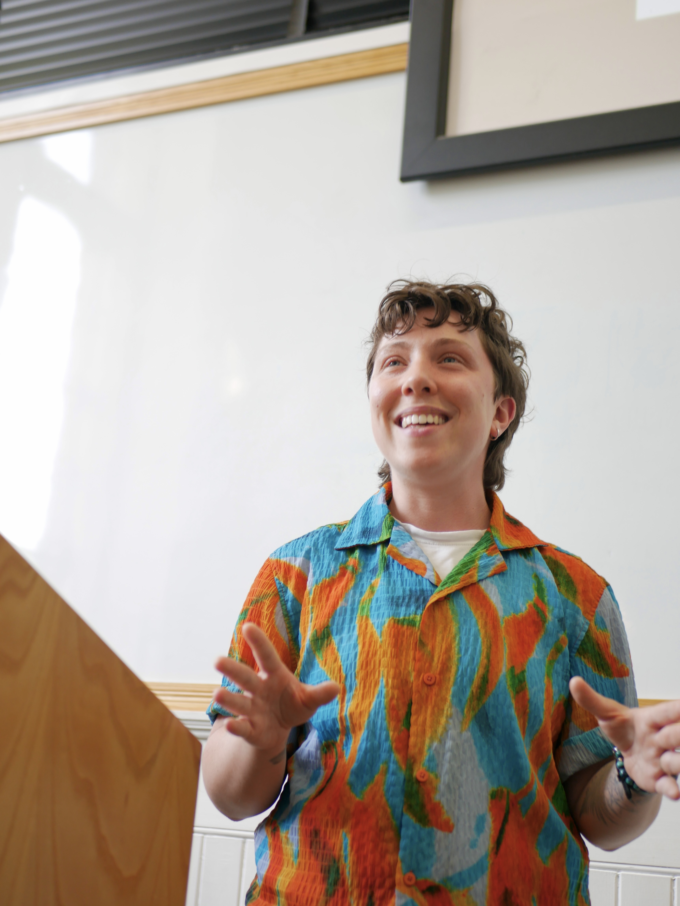

You’re already making decisions with your body. I teach you to do it well.
Tuning into the body requires attuned perception, skillful interpretation, and a critical lens. I teach the theory and practice of how to do all three to help people live more authentically and make better decisions—in keynotes, workshops, multi-session series, and scholar-in-residence weekends.

What Grows Wild: How Knowledge Is Created in the Body
Wild-growing herbs are a mystery until we encounter them or learn about them. To get to know an herb or a landscape, you have to interact with it directly—touch it, smell it, watch how it grows within its ecosystem, understand what surrounds it and what it needs. And even then, taking it into your body carries real risk; knowledge from a distance isn't the same as knowledge from contact. Getting to know our embodied knowledge—our gut feelings, our bodily responses, the patterns we carry in body, heart, and mind—works the same way. We learn to read and decode our emotions and bodily feelings in their personal, collective, and ancestral contexts by attending to them directly.
More than that, we don't undertake this work alone. Community allows us to check for bias disguised as knowing, encourages us to keep going when the forest gets dark, and delights in the fruits we find there: the joy, curiosity, and openheartedness growing wild in our own viscera.
In this workshop, we develop and refine our bodily attunement by bringing our attention and Jewish tradition to our reading of the body, using the interpretive technology of PaRDeS, reading the body as if containing different layers. This practice allows us to befriend our gut feelings, bodily sensations, and emotions so we can respond to ourselves and the world with more compassion and wisdom.
- Interpreting Gut Feelings: Philosophy, Science, and Jewish Practice — keynote on gut feelings, ancient wisdom, and the science of intuition
- The Body Inherits — keynote on ancestry, migration, intergenerational trauma, and the body
- Why Practice Doesn't Stick (And What Actually Helps) — building a sustainable meditation practice
- How Jewish Practice Supports Queer Embodiment
When to trust your gut—and how to read it
Every leader has heard the advice "trust your gut" and "don't trust your gut." Both are half right: fast thinking has helped our species survive in moments that require snap decisions, and that same fast thinking can make mistaken reasoning look like wisdom. Gut feelings are real information, and they are also shaped by history, habit, and bias. I bring a philosopher's training, a background in cognitive science, and a decade of contemplative teaching to workshops on intuition, discernment, and decision-making for teams who want more than a mindfulness app.
Campus talks & guest teaching
Talks and seminars on embodied epistemology, the philosophy of gut feelings, and the phenomenology of contemplative practice—for philosophy and religious studies departments, contemplative studies and adjacent programs, and Hillel communities.
I've taught hundreds of undergraduates at UC Berkeley during my doctoral work, and held visiting positions at Institut Jean Nicod (Paris), Harvard, and MIT. My teaching has been recognized multiple times at UC Berkeley, including the Teaching Effectiveness Award (awarded to 0.5% of Berkeley Graduate Student Instructors). I've given academic presentations on gut feelings and embodied knowing at conferences and invited talks in Nashville, Bloomington, Paris, and Lisbon.
Reading the body like text
Ancient texts like the Torah teach us to read with patience and layered attention. Particularly with Torah, we look at the bare meaning and surrounding context; we interpret what's in front of us, and we look beyond what can be perceived with the senses. I draw on my doctoral work on intuition and embodied knowing to teach communities about how taking this interpretive posture can help us understand the body: a layered text full of emotion, memory, desire, bias, talents, and trauma.
We are in a moment shaped by the somatics movement and books like The Body Keeps the Score. I introduce philosophy, cognitive science, and Jewish contemplative and interpretive practice to this conversation by teaching how to take an interpretive posture and co-create knowledge with the body.
You leave this workshop with tools for making sense of your gut feelings, habitual patterns, embodied ancestral inheritances, and the kol demamah dakah—the still small voice. Each new interpretation—informed by what we know of ourselves, our histories, and the world—creates knowledge we can use to decide when to trust our intuition, guided always by our values.